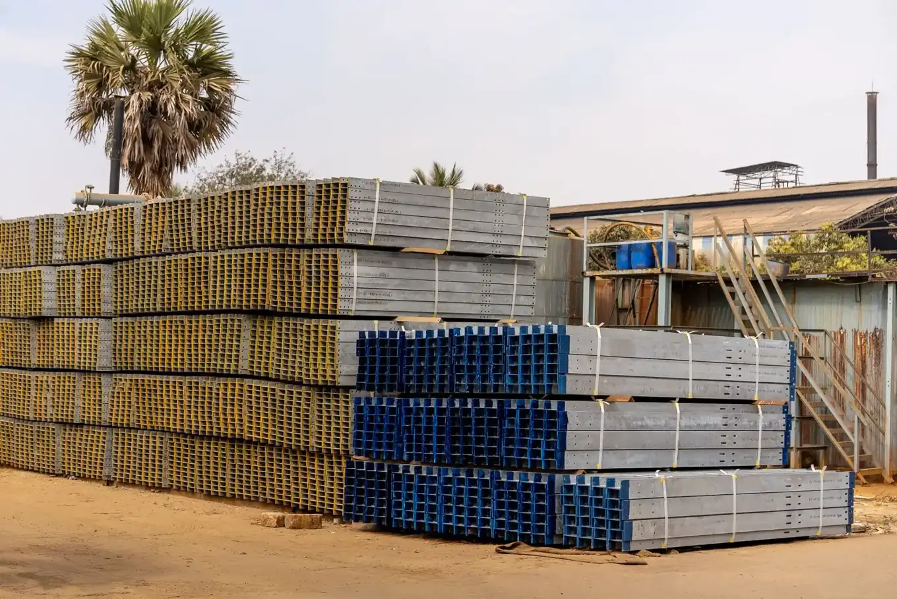

01 Como funciona
Estruturas metálicas, explicado sem rodeio
Estruturas para galpões, coberturas de grandes vãos, mezaninos e caminhos de pontes rolantes. Projeto calculado pela engenharia própria, fabricação controlada e montagem em sequência para não estocar peças no canteiro.

02 Aplicações
Para quem esta solução foi pensada
Se a sua empresa está em uma destas situações, vale conversar.
Galpões industriais e logísticos
Coberturas de grandes vãos sem pilares intermediários
Mezaninos, passarelas e estruturas para equipamentos
Ampliações de prédios em operação
03 Escopo
O que entra no contrato
- Projeto estrutural e detalhamento de fabricação
- Fabricação com inspeção dimensional e de solda
- Pintura ou galvanização conforme ambiente
- Montagem com guindastes e plataformas
- Telhas termoacústicas, zipadas ou trapezoidais
04 Etapas
Do primeiro contato à entrega
Projeto estrutural
Cálculo e detalhamento de fabricação.
Fabricação
Corte, solda e pintura com inspeção.
Logística de entrega
Peças na ordem de montagem.
Montagem
Içamento planejado e conferência topográfica.
Cobertura e fechamento
Telhas, calhas e arremates.
Vamos dimensionar a sua obra?
Envie terreno, área e prazo. A primeira estimativa sai em até 5 dias úteis.
05 Outras soluções